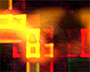

These are stills taken from my video art. Source material often consists of aerial circus performances, dancers, youtube makeup tutorials, microscopic organisms, flowers, and anything with lots of movement. This material is often processed just up to the line between recognition and abstraction. I mainly use Isadora for this and I'm currently getting into Processing as a way to continue to quench my thirst for programming projects. I have worked with many musicians and DJs to provide visuals for dance parties and music performances. I like to mix and process video live, often using audio to supply data that processes the video. I’ve also created fixed media for music videos and dance performances.